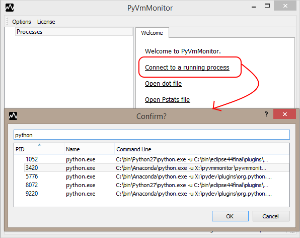
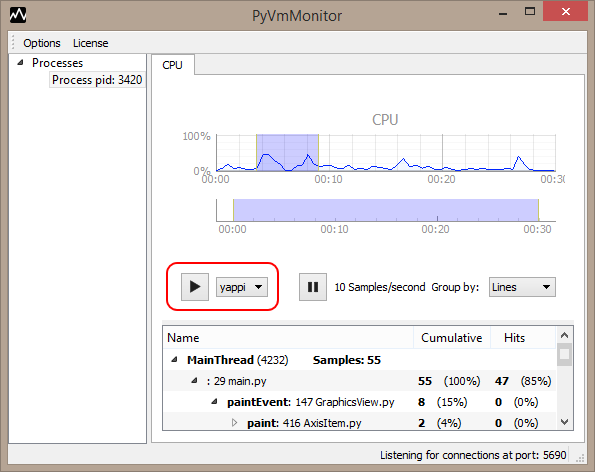
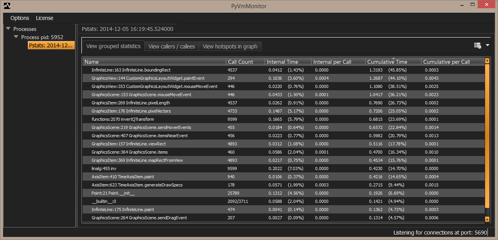
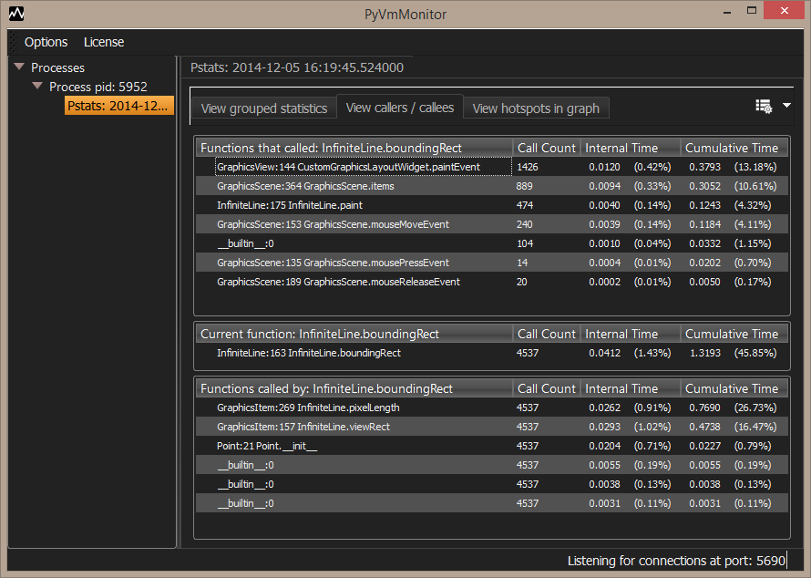
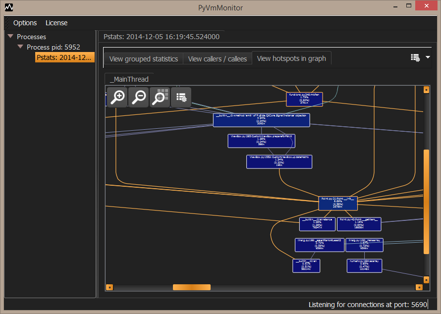
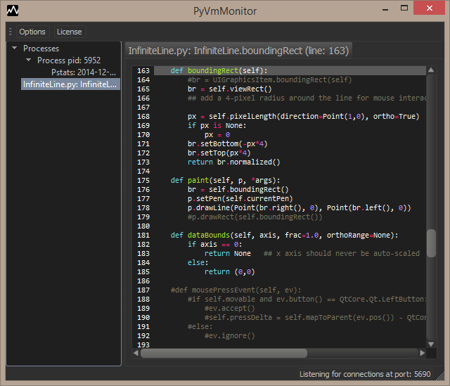

PyVmMonitor can attach to a running CPython program. To use this feature select 'Connect to
a running process' in the initial page.

After connecting to a running application, a live view will be shown where it's possible
to start/stop an on-the fly profile session using yappi.
Note: yappi 0.94 onwards is required and must be already available in your application's PYTHONPATH.

When the profile session is stopped, an item with the results will appear in the tree.
Selecting it allows us to sort the profile results as wanted and provides a detailed analysis
where it's possible to see grouped statistics.
Double-clicking an item will show the statistic in an editor and just selecting it will
make it the current function in the callers/callees view.

After selecting a function (in the grouped statistics or hotspots graph),
it's possible to navigate through callers and callees:
Double-clicking the items for functions which called the
current function or functions called by it will change the current function.
Double-clicking the current function will open an editor where the given line may be seen.

The last tab shows a view with graph showing the hotspots (layout powered by Grandalf).
Note that you may have multiple graphs: if you have multiple threads, there should be
one for each thread, but even if you have only a single thread you may still have
multiple tabs as the profile results may be disconnected.

Note: double-clicking the current function in the callers/callees or a graph node opens an editor to view the given file contents:
